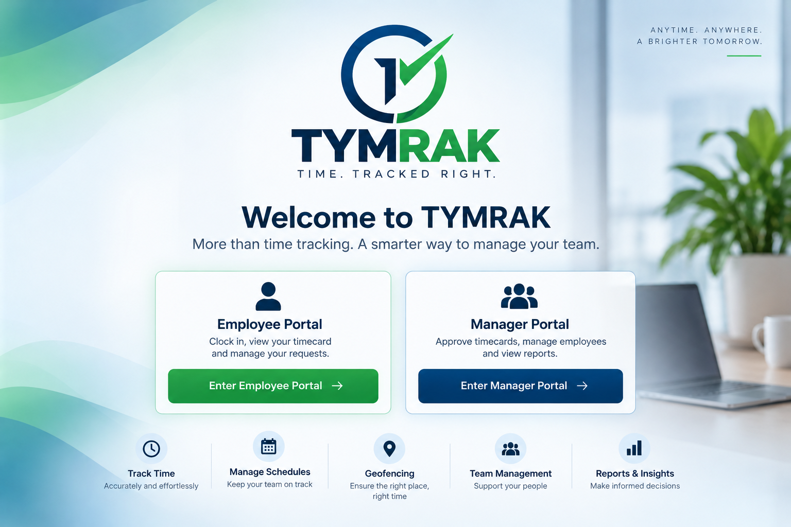
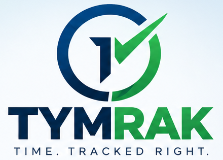

Enter Employee PortalEnter Manager Portal
Enter Employee PortalEnter Manager PortalANYTIME. ANYWHERE.
A BRIGHTER TOMORROW.

More than time tracking. A smarter way to manage your team.
Clock in, view your timecard
and manage your requests.
Approve timecards, manage employees
and view reports.